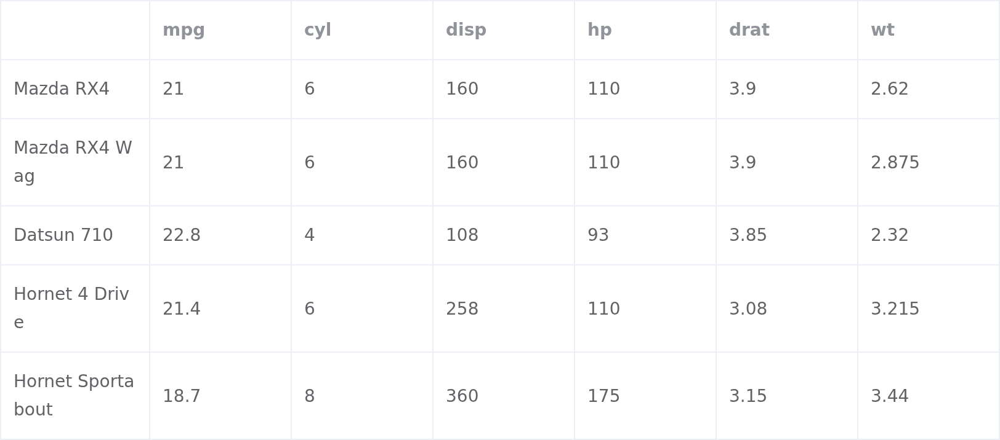
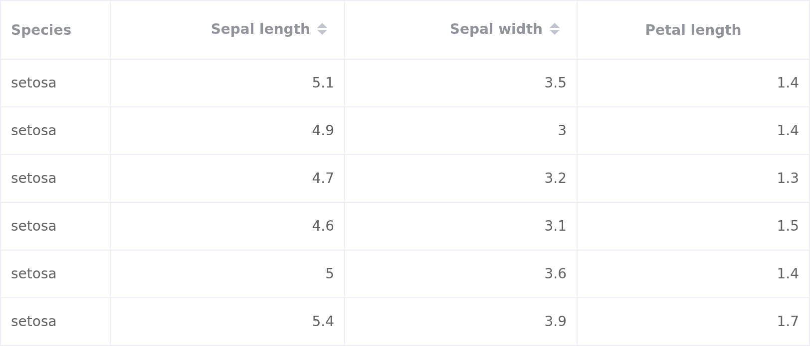
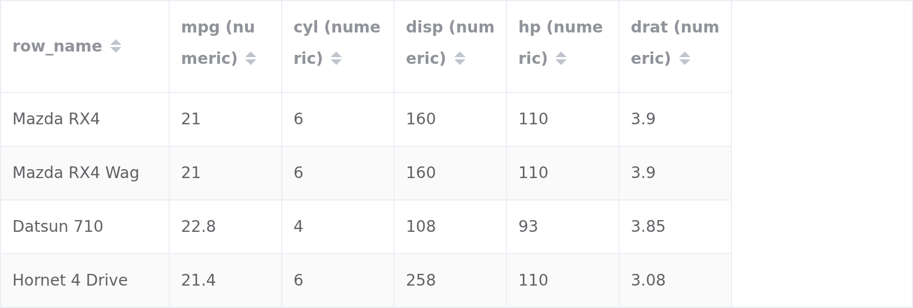
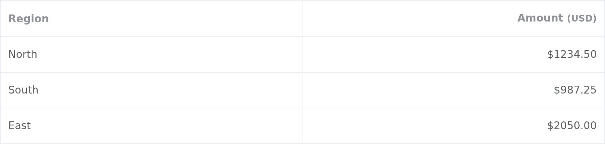
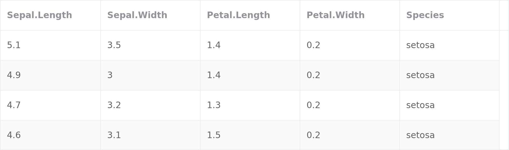
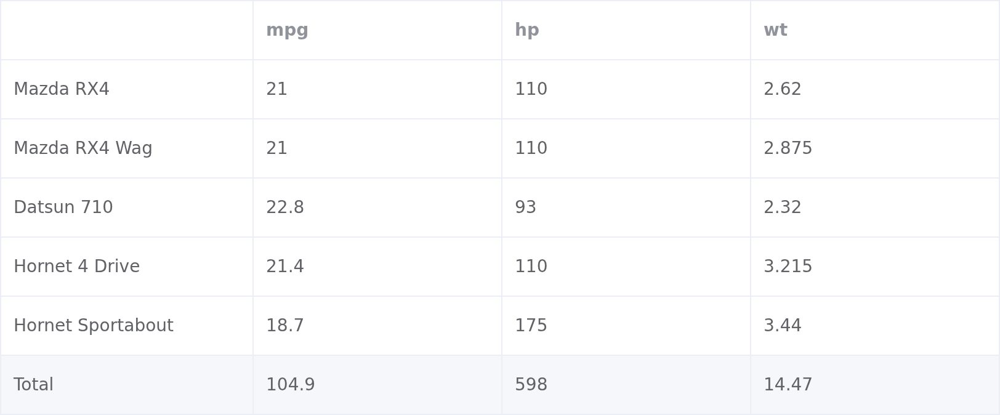
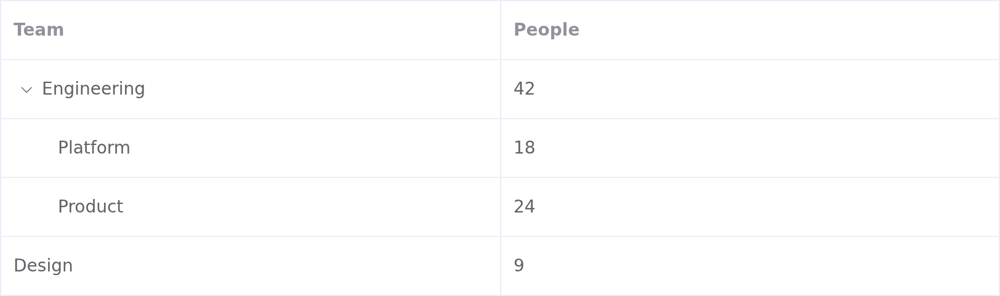

el_table() is the largest component here, and the one
whose Element API is most worth knowing. It takes a data.frame
directly.

Row names that name something – mtcars’ car names – are
kept as a first column, while row numbers are left out;
rownames = TRUE or FALSE decides it yourself.
Column names with a dot are sanitised on the way in –
Sepal.Length becomes Sepal_Length – because
Element reads a dotted prop as a path into a nested
object.
Columns
Without columns, one is inferred per data.frame column.
Passing them lets each carry its own props, which is how Element models
them. Names may be written in snake_case or in Element’s own
camelCase:
el_table("flowers",
data = head(iris, 6),
border = TRUE,
columns = list(
list(prop = "Species", label = "Species", width = "110", fixed = "left"),
list(prop = "Sepal_Length", label = "Sepal length", sortable = TRUE,
align = "right"),
list(prop = "Sepal_Width", label = "Sepal width", sortable = TRUE,
align = "right"),
list(prop = "Petal_Length", label = "Petal length", align = "right",
header_align = "center")
))
Every column attribute Element documents is accepted:
align, header_align, class_name,
min_width, fixed, resizable,
sortable, sort_by, sort_orders,
show_overflow_tooltip, filters,
filtered_value, filter_multiple,
filter_placement, reserve_selection,
index, and the ones taking a function below.
el_table_config() derives both halves from a data.frame,
for when you want to adjust the inferred columns rather than write them
out:
cfg <- el_table_config(mtcars[, 1:5], max_rows = 4)
cfg$columns <- lapply(cfg$columns, function(col) {
col$sortable <- TRUE
col
})
el_table("cfg", data = cfg$data, columns = cfg$columns, stripe = TRUE)
Formatting
A column’s formatter is a JavaScript function, given the
row, the column, the cell value and its index. A column may also render
its own header:
sales <- data.frame(region = c("North", "South", "East"),
amount = c(1234.5, 987.25, 2050))
el_table("sales", data = sales, columns = list(
list(prop = "region", label = "Region"),
list(prop = "amount", label = "Amount", align = "right",
header_html = "<b>Amount</b> <small>(USD)</small>",
formatter = htmlwidgets::JS(
"function(row, col, value) { return '$' + value.toFixed(2); }"
))
))
header_html is inserted as markup, so pass only what you
control. Formatting in R first is usually simpler; reach for
formatter when the display depends on something only the
browser knows.
Selection
selection = TRUE adds a checkbox column and reports two
inputs: input$<id>_selected_rows, the 1-based row
numbers, and input$<id>_selected, the rows
themselves. Prefer the row numbers: a row with mixed column types is
simplified to a character vector on its way back through JSON, so
numbers arrive as strings.
cars <- head(mtcars[, 1:4], 5)
ui <- el_page(
el_table("cars", data = cars, selection = TRUE,
highlight_selection_row = TRUE),
verbatimTextOutput("picked")
)
server <- function(input, output, session) {
output$picked <- renderPrint(cars[input$cars_selected_rows, ])
}
shinyApp(ui, server)
For single selection, highlight_current_row = TRUE
reports the clicked row as
input$<id>_current_change.
Row events
Every Element table event is forwarded as
input$<id>_<event>. They are event inputs, so
read them with observeEvent():
ui <- el_page(
el_table("flowers", data = head(iris, 4), highlight_current_row = TRUE),
verbatimTextOutput("clicked")
)
server <- function(input, output, session) {
clicked <- reactiveVal("Click a row")
observeEvent(input$flowers_row_click, {
click <- input$flowers_row_click
clicked(sprintf("Row %d: %s, sepal %s cm", click$row_index,
click$row$Species, click$row$Sepal_Length))
})
output$clicked <- renderText(clicked())
}
shinyApp(ui, server)
Each arrives as a named list rather than Element’s raw arguments. A
row event carries row_index – 1-based, to index your own
data with – the row, and the column prop; a
cell event adds the cell’s value; sort_change
gives column and order;
current_change gives row_index and
previous_index.
A fixed header
height fixes the header and scrolls the body;
max_height does the same once the content exceeds it:
el_table("all", data = iris, height = "240px", stripe = TRUE)
Summaries
show_summary adds a row of column totals.
sum_text labels it, and summary_method
replaces the arithmetic:
el_table("sums", data = head(mtcars[, c("mpg", "hp", "wt")], 5),
show_summary = TRUE, sum_text = "Total", border = TRUE)
Methods
update_el_table() changes data and settings; methods
need el_call(). doLayout() is the one to
remember: a table rendered inside a tab or a collapse that starts hidden
measures its columns as zero, and stays that way until told to measure
again.
ui <- el_page(
el_tabs("views", selected = "about", tabs = list(
list(name = "about", label = "About", content = tags$p("Open the Data tab.")),
list(name = "data", label = "Data",
content = el_table("hidden", data = head(iris, 4)))
))
)
server <- function(input, output, session) {
observeEvent(input$views, {
if (identical(input$views, "data")) el_call(session, "hidden", "doLayout")
})
}
shinyApp(ui, server)
Server-side paging
There is no server = TRUE as in DT. Pair the table with
el_pagination() and send one page at a time:
page_size <- 5
page_of <- function(n) iris[(n - 1) * page_size + seq_len(page_size), ]
ui <- el_page(
el_table("rows", data = page_of(1)),
el_pagination("pager", total = nrow(iris), page_size = page_size,
layout = "total, prev, pager, next")
)
server <- function(input, output, session) {
observeEvent(input$pager, {
update_el_table(session, "rows", data = page_of(input$pager))
})
}
shinyApp(ui, server)
Tree data
Rows can nest, keyed by row_key. Each row may carry a
children list:
org <- list(
list(id = 1, name = "Engineering", size = 42, children = list(
list(id = 11, name = "Platform", size = 18),
list(id = 12, name = "Product", size = 24)
)),
list(id = 2, name = "Design", size = 9)
)
el_table("org", data = org, row_key = "id", default_expand_all = TRUE,
columns = list(list(prop = "name", label = "Team"),
list(prop = "size", label = "People")))
With lazy = TRUE and a load function,
children are fetched as their parent is expanded.